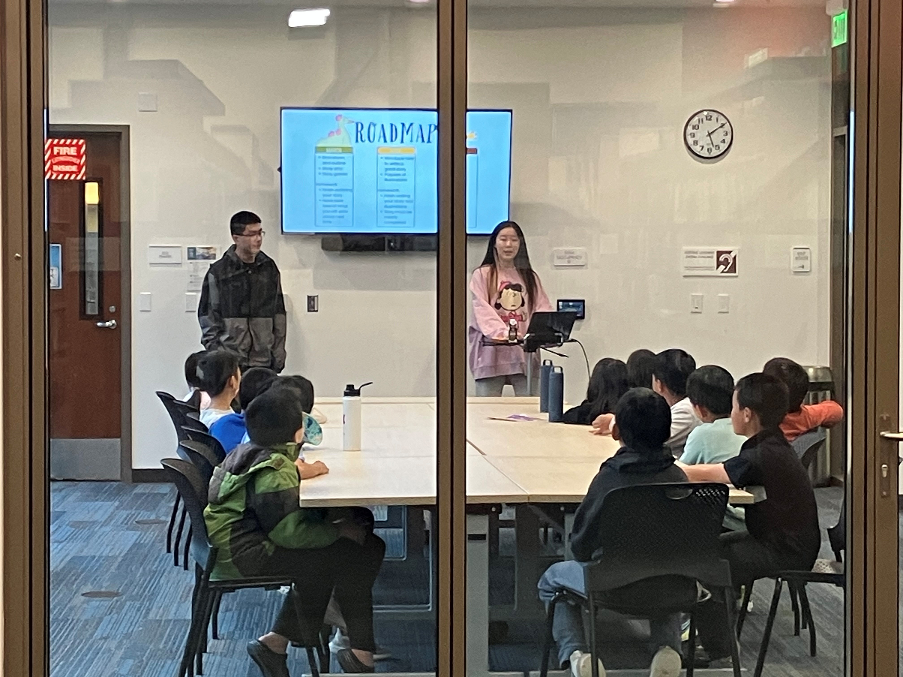
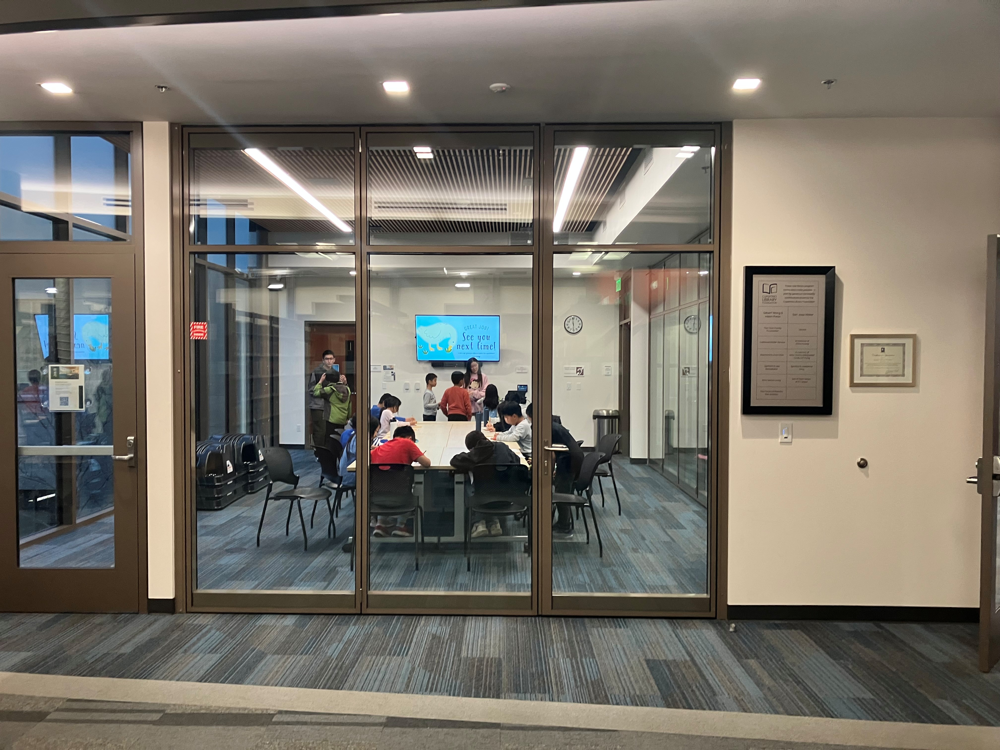

Beyond the Page - Writing Workshops
In 9th grade, I founded a creative writing organization dedicated to inspiring young writers and helping them improve their skills. For over two years now, I have been leading workshops for elementary and middle school students in order to teach creative writing techniques, self-expression, and build confidence. More recently, I organized a storybook writing contest, encouraging students to write and illustrate their own original books to share with the community.
Workshops I've organized and participated in:




Writing Awards
My writing has been selected as a runner up for the New York Times Summer Reading Contest 2025, gaining national recognition and reflecting my passion for writing. You can find my writing in my blog!
Book
I am currently writing and illustrating a children's book that raises awareness regarding the importance of sleep, effectively combining storytelling and educating young students on concepts related to neuroscience. The book will introduce healthy sleeping habits to young readers. The publication of the book, "The Blooming Mind," is planned for the summer of 2026. Stay tuned for updates!
Journalism Club & Radio Station
As the current leader of Journalism Club and the founder of the journalism branch of the school radio broadcast, I write and edit stories that uncover the issues and experiences shaping student life, publishing print editions monthly that are distributed around the school. The club has over 600 articles on its website, with more being added every two weeks. Through interviews, reporting, and collaboration with our radio station, I explore how storytelling can bring overlooked perspectives into the conversation.
NYT Summer Writing Articles
Entries from the 2024 and 2025 NYT Summer Writing Contest seasons.
Happiness Doesn't Have to be a Heavy Lift
Reflections on tiny little joys and the power of slowing down.
At the Tesla Diner, the Future Looks Mid
Week 10 final entry — how anticipation outpaces reality.
Wrinkled, Flabby, Buoyant
Responding to a swimming essay with parallels to dance.
When Novels Mattered
Lamenting the fading of novels due to social media.
Does Dishwasher Rinse Aid Really Harm Your Gut?
Generational differences in interpreting headlines.
Efficiency is Leading us Nowhere
Overreliance on ChatGPT and efficiency culture.
They Asked an A.I. Chatbot Questions...
AI chatbots and the dangers of mimicking empathy.
What's So Problematic About 'Problematic'?
How vague judgmental words stifle creativity.
Welcome Back, Pandas
Ethics of using pandas as diplomatic tools.
Before the Olympics
French fashion as cultural expression.
Paris mayor swims in Seine River...
False sense of safety before the Olympics.
The Founders Saw This Insane Political Moment Coming
Constitutional debates vs. today's polarization.
Is a Disney Theme Park Vacation Still Worth the Price
The love-hate relationship with Disney's expensive magic.